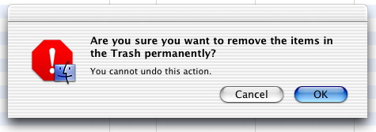
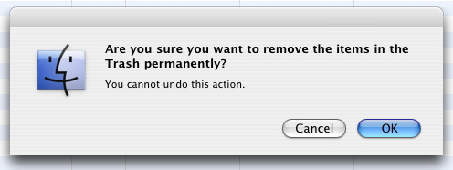

Q: I do not get Stop Alerts anymore in Panther or Tiger, I just get a Note Alert. Why?A: Actually, you are still seeing a Stop Alert; it has been modified to enhance the User Experience. Before Mac OS X, three distinct icons were used for Note, Caution, and Stop alerts. The Stop Alert looked like Figure 1: Figure 1: Mac OS 9 Stop Alert. From Mac OS X v10.0 (Cheetah) to Mac OS X v10.2 (Jaguar), when you called StopAlert, you would get an alert (see Figure 2) with a red stop icon badged with the icon of the application which issued the alert: Figure 2: Jaguar and earlier Stop Alert issued by the Finder.  The same code on Mac OS X v10.3 (Panther) and Mac OS X v10.4 (Tiger) displays an alert (see Figure 3) with the application icon instead: Figure 3: Panther and later Stop Alert issued by the Finder.  Furthermore, NoteAlert also displays the same application icon instead of its previous "speaking head" icon. Only CautionAlert displays an alert which retains its own specific warning icon. Those changes were decided by the Human Interface Guidelines committee. The rationale for that decision is simple: on Mac OS X, all windows of all launched applications are interleaved. Thus, when an alert pops up, there is no easy way for the user to know which application issued the alert. Replacing the standard icons by the application icon gives a visual clue to the user who can then identify the source. Since the NoteAlert and the StopAlert were the most commonly used alerts, they were changed, but the CautionAlert, rarely used, was unchanged. Document Revision History| Date | Notes |
|---|
| 2005-10-04 | System Alerts now use the Application icon to let the User easily identify the source of the alert. |
Posted: 2005-10-04
|